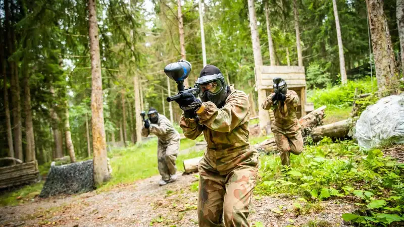

Biaya bermain paintball di Malang bergantung pada durasi sesi, jumlah peluru, jenis lapangan, penyewaan perlengkapan, dan hari kunjungan. Konfirmasi rincian paket ke pengelola.
- Harga paket paintball umumnya terdiri atas akses lapangan, sewa perlengkapan, dan jumlah peluru dasar.
- Perbedaan harga antar arena dipengaruhi kualitas peralatan, fasilitas, jumlah wasit, dan lokasi.
- Musim liburan dan akhir pekan dapat memengaruhi harga serta ketersediaan jadwal.
- Anggaran rombongan sebaiknya menyertakan peluru tambahan dan biaya lain di luar paket.
Apa saja komponen biaya bermain paintball?
Komponen biaya bermain paintball umumnya mencakup akses lapangan, sewa marker dan pelindung, paket peluru dasar, serta biaya tambahan seperti peluru ekstra, wasit khusus, atau fasilitas pendukung.
- Akses lapangan: Tiket masuk per orang atau sewa lapangan per sesi.
- Sewa perlengkapan: Marker, masker, dan rompi. Sebagian arena memasukkannya ke dalam paket.
- Paket peluru: Jumlah peluru dasar berbeda antar paket, dan peluru tambahan biasanya dijual terpisah.
- Biaya tambahan: Pelindung ekstra, dokumentasi, konsumsi, atau area khusus untuk gathering.
Karena struktur harga tiap arena berbeda, bandingkan isi paket, bukan hanya angka total.
Faktor apa yang membuat harga paket berbeda antar arena?
Harga paket berbeda karena kualitas peralatan, kondisi dan luas lapangan, jumlah wasit, fasilitas pendukung, biaya operasional, serta lokasi arena dan kepadatan kunjungan.
Arena dengan peralatan baru, lapangan luas, dan wasit lebih banyak umumnya memiliki biaya operasional lebih tinggi. Fasilitas seperti area istirahat, toilet, dan kantin juga memengaruhi harga. Lokasi di kawasan wisata populer dapat memiliki harga berbeda dibanding lokasi di pinggiran.
Kualitas layanan tidak selalu sebanding dengan harga. Bandingkan paket berdasarkan isi dan reputasi arena, bukan semata-mata berdasarkan angka.
Bagaimana pengaruh musim liburan terhadap biaya?
Musim liburan meningkatkan permintaan sehingga harga, ketersediaan sesi, dan waktu tunggu dapat berubah. Reservasi lebih awal membantu mengamankan jadwal dan paket yang diinginkan.
Dinas Pariwisata Kota Batu mencatat data sementara 778.235 wisatawan selama libur Lebaran 2025, naik dari 564.622 pada periode serupa 2024. Laporan ANTARA pada April 2025 tersebut menunjukkan peningkatan permintaan wisata yang signifikan pada momen libur panjang. antaranews
Kenaikan arus wisatawan berpotensi memengaruhi ketersediaan sesi paintball. Sebagian penyedia mengatur harga atau jadwal khusus pada periode padat. Karena kebijakan tiap arena berbeda, tanyakan apakah ada perbedaan harga antara hari biasa dan hari libur.
Bagaimana cara menghitung anggaran untuk rombongan?
Hitung anggaran rombongan dengan menjumlahkan harga paket per orang, peluru tambahan, sewa perlengkapan tambahan, konsumsi, dan transportasi, lalu tambahkan cadangan untuk kebutuhan tak terduga.
Rumus sederhana yang dapat dipakai:
Total anggaran = (harga paket x jumlah peserta) + peluru tambahan + perlengkapan tambahan + konsumsi + transportasi + cadangan
Sebagai contoh, panitia dapat memperkirakan bahwa sebagian peserta akan meminta peluru tambahan. Sisihkan cadangan sekitar 10 sampai 15 persen dari total sebagai buffer. Angka ini hanya pedoman perencanaan umum dan dapat disesuaikan dengan kebijakan penyelenggara.
Tanyakan apakah arena menawarkan potongan untuk rombongan dengan jumlah peserta tertentu.
Paket apa yang umumnya ditawarkan arena paintball?
Arena paintball umumnya menawarkan paket dasar untuk individu, paket rombongan dengan harga per orang yang lebih efisien, dan paket gathering yang menyertakan area istirahat atau konsumsi.
- Paket dasar: Cocok untuk pemula atau kelompok kecil, dengan jumlah peluru terbatas.
- Paket rombongan: Ditujukan untuk kelompok besar dan sering menawarkan harga per orang yang lebih efisien.
- Paket gathering: Menyatukan permainan dengan fasilitas tambahan seperti tempat berkumpul, konsumsi, atau dokumentasi.
Nama dan isi paket berbeda antar arena. Minta rincian tertulis agar tidak ada kesalahpahaman.
Bagaimana cara menghemat biaya tanpa mengorbankan keselamatan?
Hemat biaya dengan bermain pada hari biasa, memesan paket rombongan, membandingkan isi paket, dan membatasi peluru tambahan, tanpa mengurangi kewajiban masker dan pengawasan wasit.
Pilih hari biasa bila jadwal memungkinkan, karena kepadatan biasanya lebih rendah. Gabungkan peserta dalam satu rombongan untuk memperoleh harga paket. Bawa perlengkapan pribadi yang sesuai, seperti pakaian tertutup dan sepatu, agar tidak perlu menyewa tambahan.
Jangan menghemat pada hal-hal yang berkaitan dengan keselamatan. Masker pelindung, marker terawat, dan wasit adalah komponen yang tidak boleh dikorbankan.
Biaya tersembunyi apa yang sering terlewat?
Biaya yang sering terlewat meliputi peluru tambahan, sewa perlengkapan ekstra, biaya parkir, konsumsi, transportasi, dan biaya pembatalan atau penjadwalan ulang sesi.
Peluru tambahan sering menjadi pos pengeluaran terbesar di luar paket, terutama bagi pemain yang aktif. Biaya pembatalan berbeda antar arena, sehingga tanyakan kebijakannya sebelum membayar uang muka. Untuk rombongan, biaya transportasi dan konsumsi dapat mencapai porsi yang signifikan dari total anggaran.
FAQ
Apakah harga paket paintball sudah termasuk peluru?
Sebagian besar paket sudah termasuk jumlah peluru dasar. Peluru tambahan biasanya dijual terpisah, sehingga perlu dikonfirmasi saat reservasi.
Apakah ada potongan harga untuk rombongan?
Banyak arena menawarkan paket rombongan dengan harga per orang yang lebih efisien. Besaran dan syaratnya berbeda antar arena, sehingga tanyakan langsung kepada pengelola.
Apakah harga akhir pekan berbeda dengan hari biasa?
Harga dan ketersediaan sesi dapat berbeda pada akhir pekan dan musim liburan. Konfirmasi kebijakan harga arena untuk tanggal yang direncanakan.